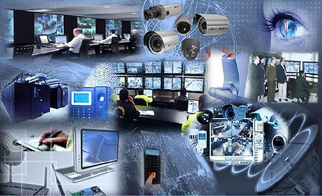

En la actualidad, la seguridad y el buen funcionamiento de los sistemas electrónicos e informáticos son esenciales tanto en el ámbito personal como empresarial. Los servicios técnicos de instalación y mantenimiento de seguridad electrónica, junto con el mantenimiento preventivo y correctivo de equipos informáticos, son fundamentales para proteger bienes, datos e infraestructura tecnológica.
Este blog está diseñado para ofrecerte información útil sobre soluciones técnicas que garantizan la operatividad y confiabilidad de tus sistemas de seguridad y equipos informáticos. Aquí encontrarás consejos prácticos, explicaciones sobre nuestros servicios y respuestas a las dudas más comunes para ayudarte a tomar decisiones informadas y optimizar tus recursos tecnológicos.

| - | Instalción | Mantenimiento | Equipos |
|---|---|---|---|
| Seg. Electronica | 100$ | 60$ | De acuerdo a la estructura |
| Eq. Informatico | 80$ | 40$ | De acuerdo a la estructura |